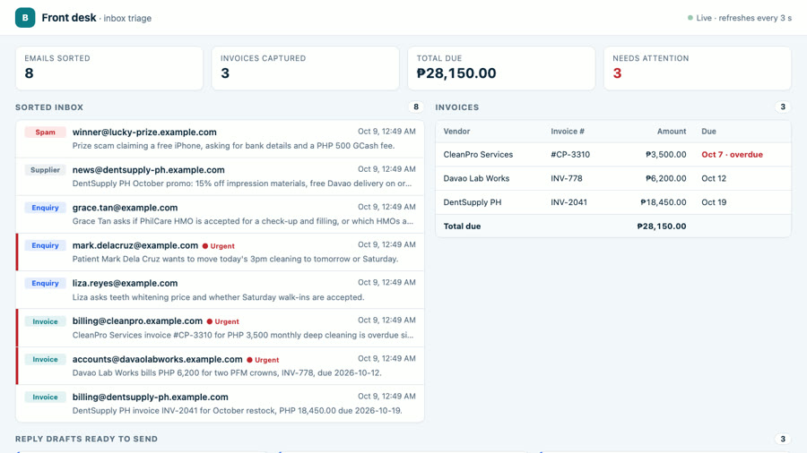
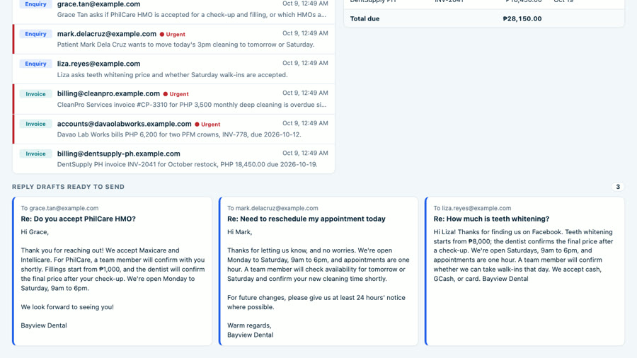
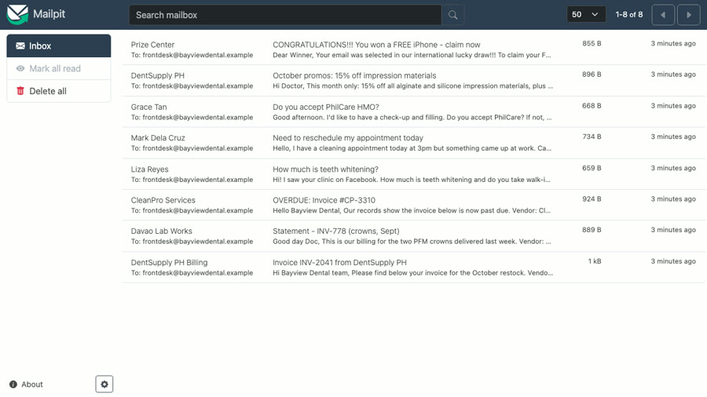

AI inbox triage: every email sorted, every supplier invoice in one table, patient replies drafted
A clinic's front desk gets patient questions, supplier promos, spam and invoices all in one inbox, and an invoice slips past its due date. This assistant reads each email, sorts it, copies the invoice details into one table, flags what is overdue, and drafts the reply to each patient for staff to check and send.
What changes for the front desk
- Before: staff open every email to find what matters. Bills hide between promos and spam until the supplier sends an "OVERDUE" notice.
- After: every email arrives already labelled (bill, patient question, supplier, spam). Every bill sits in one list with its amount and due date, late ones in red. Each patient question has a reply waiting for staff to approve.
A real bill, read and filed automatically
From the recorded run. This is the email CleanPro sent (a fictional vendor):
And what the assistant filed in the bills list, with nobody typing anything:
| Vendor | CleanPro Services |
|---|---|
| Invoice # | #CP-3310 |
| Amount | ₱3,500.00 (PHP) |
| Due | 2026-10-07 · overdue, marked urgent |
| Summary | CleanPro Services invoice #CP-3310 for PHP 3,500 monthly deep cleaning is overdue since 2026-10-07. |
It only files a bill when the company name and invoice number really appear in the email. If they don't, nothing is filed and a person checks the email instead. That safety check is built in, so it doesn't rely on the AI being right.

A real reply draft, word for word
Liza emailed: "How much is teeth whitening and do you take walk-ins on Saturday?" The assistant drafted this for staff to check and send:
Hi Liza! Thanks for finding us on Facebook. Teeth whitening starts from ₱8,000; the dentist confirms the final price after a check-up. We're open Saturdays, 9am to 6pm, and appointments are one hour. A team member will confirm whether we can take walk-ins that day. We accept cash, GCash, or card. Bayview Dental
The price and hours come from the clinic's info sheet. Walk-ins aren't on the sheet, so it doesn't guess: a team member will confirm.

The problem: one inbox, four kinds of email, and a bill that gets missed
Patient questions wait while staff scroll past promos and spam. Supplier invoices sit unread until the vendor sends an "OVERDUE" notice.
Results (measured in the recorded run)
- 8 of 8 emails sorted in 47.3 s: 3 invoices, 3 patient enquiries, 1 supplier promo, 1 spam (a fake "free iPhone" asking for bank details).
- 3 invoices captured: DentSupply PH INV-2041 ₱18,450, Davao Lab Works INV-778 ₱6,200, CleanPro Services #CP-3310 ₱3,500. ₱28,150 total due.
- Urgent flags: CleanPro (overdue), Davao Lab Works (due in 3 days) and Mark, a patient who needs to move today's appointment.
- 3 reply drafts for the 3 patient emails; nothing is sent without a person.
- Runs again safely: the next check skips emails it already sorted, so nothing is counted twice.
Honest note: Bayview Dental is a demo clinic I made up, the vendors and patients are fictional, and the emails go to a local test mailbox (Mailpit), not a real Gmail or Outlook inbox. There is no paying client here. The workflow, the AI output and the timings are real, from one recorded run. The video trims the waiting time and says so on screen; the timer shows the real time.
How it works: five steps
Every minute, the workflow runs the same five steps, automatically:
- Check the mailbox. Every minute (or on demand), it lists the inbox.
- Skip what's already sorted. Emails it has seen before are left alone.
- Read each email together with the clinic's info sheet (prices, hours, HMOs).
- AI sorts it: invoice, patient question, supplier or spam; how urgent; a one-line summary; the invoice details; a reply draft for patients. Code then double-checks the invoice against the email.
- Save. The email, the invoice row and the draft go to the database, and the front-desk dashboard shows them.
The test mailbox it reads

Tools used
- n8n (self-hosted): the workflow (Schedule, Webhook, HTTP Request, Postgres, Code, Split in Batches and Respond to Webhook nodes).
- Claude (Anthropic): reads each email and returns the category, urgency, summary, invoice fields and reply draft.
- Postgres: emails, invoices, reply drafts and the clinic info sheet.
- Mailpit: a local test mailbox, so no real inbox is touched.
View the code on GitHub → (workflow, schema, sample emails, dashboard, MIT licence)
How I'd set this up for your business
- You give me access to the inbox (Gmail or Outlook) and your info sheet: services, prices, hours, policies.
- We agree the rules: your email categories, what counts as urgent, and where invoices should go (sheet, accounting tool or a table).
- We test it together on a week of your real emails until the sorting and drafts match how you work.
- Your team works from one screen: sorted inbox, invoices with the total due, and drafts ready to send.
FAQ
Will it make up invoice numbers or amounts?
Claude is told to copy invoice fields exactly from the email. Then the workflow checks it in code: an invoice is only saved if the vendor name and invoice number really appear in the email, the amount is a number and the due date is a real date. If anything fails, nothing is saved as an invoice; the email is marked supplier, high urgency, for a person to read. AI can still misread, so every email stays on the dashboard.
Does it send emails on its own?
No. It only writes reply drafts for patient questions. A staff member reads, edits and sends them. Price and policy answers come only from the clinic's info sheet; anything else says a team member will confirm.
Does it work with Gmail or Outlook?
This demo reads a local test mailbox (Mailpit) so no real inbox is touched. n8n has Gmail and Microsoft Outlook nodes, so the 'check the mailbox' step would be swapped for one of those and connected to your account; the sort, extract and save steps stay the same. I have not run it on a real Gmail or Outlook inbox yet.
Can the invoices go to my spreadsheet or accounting tool?
In the demo they go to a Postgres table and the dashboard. n8n has Google Sheets, Airtable, QuickBooks and Xero nodes, so the save step could write there instead; I would set that up and test it with your own invoices.
What does it cost to run?
Two running costs: hosting n8n (self-hosted on a small server, or an n8n Cloud plan) and AI usage, billed per email by the AI provider. I would estimate both from your monthly email volume before we start.
Video transcript
Full narration of the 83-second demo video, with start times.
A clinic's front desk drowns in email. Patient questions, supplier promos, spam. And somewhere in there, an invoice that slips past its due date.
This is Bayview Dental's inbox, a local test mailbox with eight new emails. Three of them are supplier invoices.
The workflow checks the mailbox every minute. Here I trigger it right away. Claude reads each email live, and the dashboard fills as they land.
Every invoice goes into one table: vendor, number, amount and due date. CleanPro is already overdue, so it shows in red. Total due: 28,150 pesos.
For patient questions, it drafts the reply. The whitening price comes from the clinic's own info, ready for staff to check and send.
Behind it is one n8n workflow. Check the mailbox. Skip what's already sorted. Read each email. Claude sorts it and pulls out the invoice. Save it for the dashboard.
Built by McKeen Asma, AI Automation VA, with n8n, and Claude.
Same clinic: AI lead responder (the lead form) · clinic chat assistant (website chat and booking)